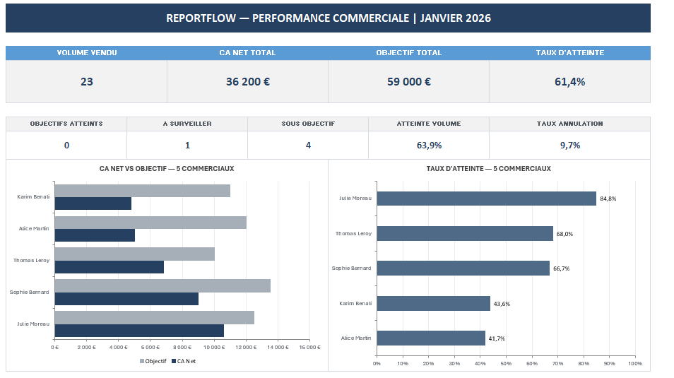
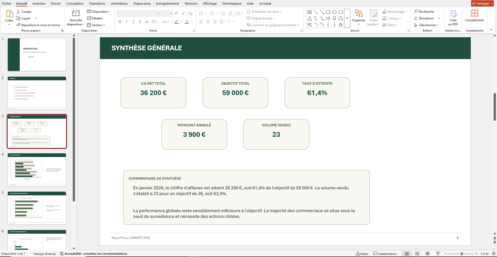
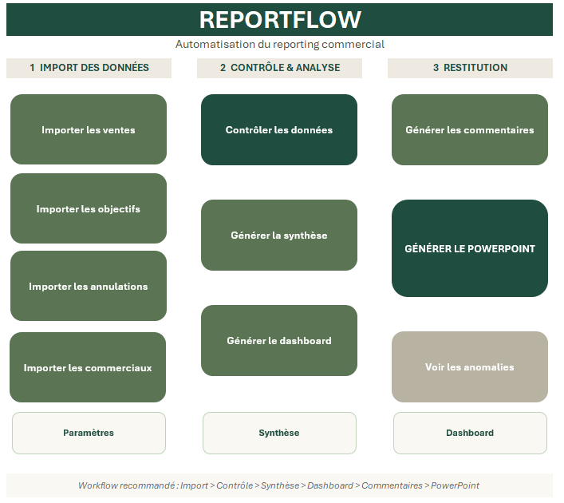
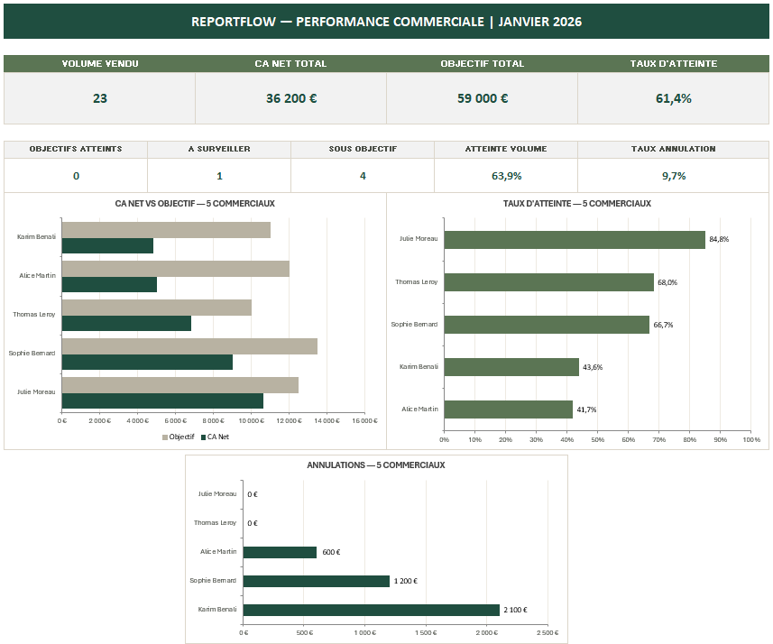
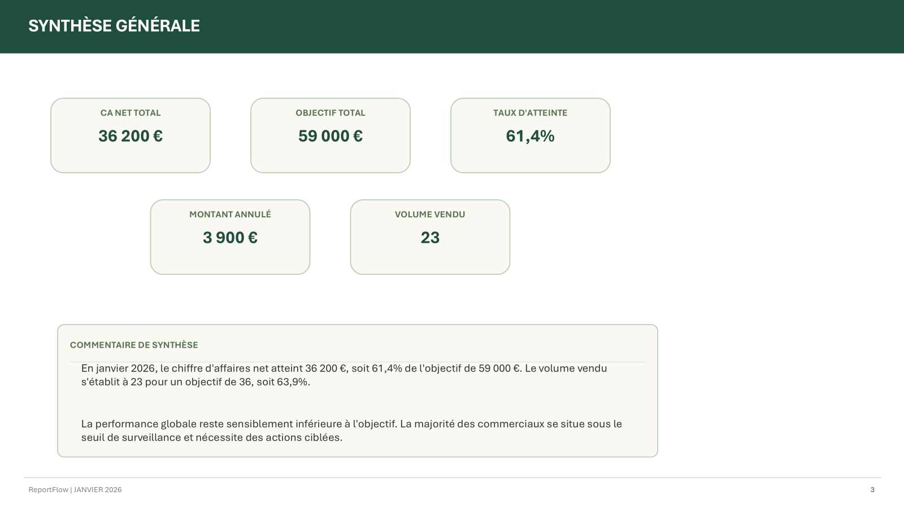
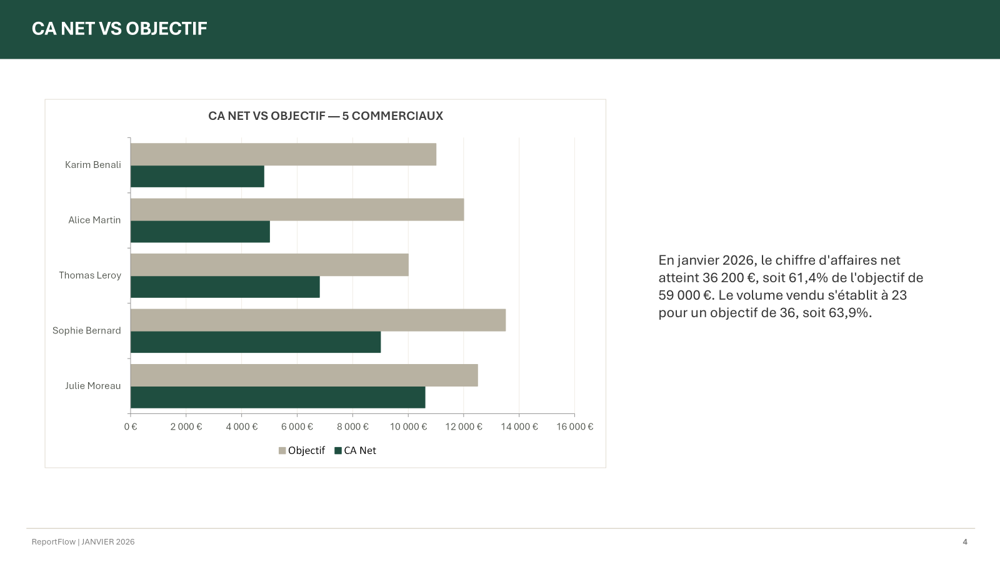

01
Diagnostic & dépannage Excel
Formules, macros VBA, fichiers lents, erreurs de logique ou traitements manuels à simplifier.
J’aide les entreprises et indépendants à fiabiliser leurs fichiers, automatiser leurs traitements récurrents et produire leurs reportings plus rapidement.



Une intervention peut concerner un fichier bloquant, une macro à corriger ou un processus récurrent à automatiser de bout en bout.
Formules, macros VBA, fichiers lents, erreurs de logique ou traitements manuels à simplifier.
Imports, consolidations, contrôles, calculs et tâches répétitives automatisés sous Excel/VBA.
Création de synthèses, KPI, dashboards et restitutions adaptées aux besoins métier.
Création automatique de présentations PowerPoint et autres livrables à partir de données Excel.
Mon objectif est de montrer comment un processus manuel peut être transformé en outil automatisé, fiable et réutilisable.
Outil démonstratif automatisant l’import de plusieurs sources, les contrôles de cohérence, la consolidation des données, la génération d’une synthèse, d’un dashboard, de commentaires automatiques et d’une présentation PowerPoint.




Les fichiers contiennent uniquement des données fictives et servent à illustrer le fonctionnement de l’outil.
Automatiser la collecte et la consolidation de plusieurs fichiers récurrents dans une base unique et contrôlée.
Transformer un fichier lourd ou très manuel en outil plus rapide, fiable et simple à utiliser.
Chargé d’études actuarielles en assurance collective, je travaille sur la production et l’analyse de résultats, les calculs de provisions, la fiabilisation des données et l’optimisation des processus.
Cette expérience m’a amené à développer des outils Excel/VBA pour réduire les manipulations manuelles, sécuriser les contrôles et accélérer la production de reportings et de présentations.
Décrivez-moi votre besoin. Je peux intervenir sur un problème ponctuel comme sur un projet d’automatisation plus structuré.